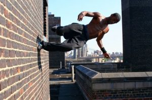
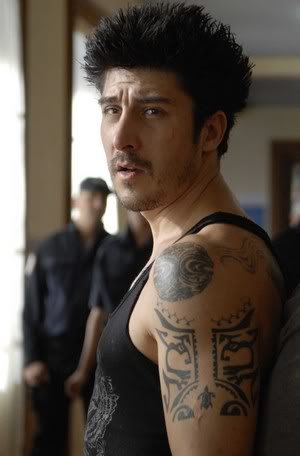

Il parkour è uno sport e filosofia di vita metropolitana nata in Francia agli inizi degli anni '90.
Consiste nell'eseguire un percorso, superando qualsiasi genere di ostacolo con la maggior efficienza, velocità e semplicità di movimento possibile, adattando il proprio corpo all'ambiente circostante, naturale o urbano, attraverso corsa, salti, equilibrio, scalate, arrampicate, ecc.
I primi termini utilizzati per descrivere questa forma di allenamento furono «arte dello spostamento» (art du déplacement) e «percorso» (parcours).
Il termine parkour, coniato da David Belle deriva invece da parcours du combattant (percorso del combattente), ovvero il percorso di guerra utilizzato nell'addestramento militare proposto da Georges Hébert. Alla parola parcours, Belle sostituì la «c» con la «k», per suggerire aggressività, ed eliminò la «s» muta perché contrastava con l'idea di efficienza del parkour.
I praticanti del parkour sono chiamati tracciatori (traceurs), o tracciatrici (traceuses) al femminile.
Il parkour trae ispirazione dal metodo naturale di Georges Hébert, ufficiale di marina francese, che nei primi anni del Novecento sviluppò un particolare metodo di allenamento per l'addestramento delle truppe, definito Hébertismo, il cui motto è: «Essere forti per essere utili».
Il principio alla base del metodo hébertiano è che il miglior modo per allenare un uomo è farlo esercitare nei movimenti naturali che sa fare, in situazioni che la natura gli presenta e gli richiede.
Il passaggio da tale pratica di allenamento al parkour è dovuta a David Belle, figlio di un pompiere addestrato proprio con il metodo di Hébert, che fin da giovane sperimenta percorsi e tracciati.

In questa foto vediamo un traceur fare un wallrun o, corsa su un muro in italiano.
Ecco alcuni film che possono essere interessanti, sul parkour :
David Belle, nato nel 1973 in Francia, è un ginnasta, stuntman e attore francese, nonchè cofondatore della disciplina Parkour.
Vive per i suoi primi quattordici anni a Les Sables-d'Olonne e nel 1987 si trasferisce a Lisses.
Ha dedicato la sua vita all'allenamento, prendendo spunto dall'esempio atletico del padre Raymond (addestrato secondo il metodo di Georges Hébert) e del nonno Gilbert Kitten, entrambi decorati pompieri parigini.
Il padre trasmise a David un modo di pensare rivolto al superamento di tutti gli ostacoli. Nel 1988, all'età di 15 anni, Belle lasciò la scuola e andò a Lisses per incominciare il suo servizio nazionale. Crebbe con un gruppo di amici che sarebbe diventato il nucleo degli Yamakasi (Yann Hnautra, Châu Belle Dinh, Malik Diouf, Laurent Piemontesi, Guylain N'Guba Boyeke, Charles Perriere, Sébastien Foucan e Williams Belle). Questi e altri compagni vivevano in diversi paesi vicino Parigi. Per un periodo fu pompiere, ma per un infortunio fu costretto a dimettersi e per motivi personali non tornò più. In seguito si arruolò nelle Troupes de marine a Vannes, dove ricevette una promozione, un diploma d'onore per la sua agilità e divenne campione del reggimento nella scalata della corda (come suo padre prima di lui) e nella corsa a ostacoli dell'Essonne. Ma per lui la rigida vita del militare era limitante. Ha svolto vari lavori come magazziniere, guardia della sicurezza e venditore di mobili. Poi andò in India dove ricevette una cintura nera di kung fu. Dopo il suo ritorno incominciò a promuovere la sua disciplina filmando le sue capacità. Nel 1997 il team Stade 2 (Francis Marroto, Pierre Sleed e Pierre Salviac) decise di realizzare un film su David Belle in una serie di sue collaborazioni: The speed air man, Catmen, La Relève e Les traceurs. Fu allora che venne coniata la definizione "traceur". Sono celebri le sue doti di Traceur in Banlieue 13, film di Pierre Morel ambientato in una Parigi del 2010, e nel seguito Banlieue 13 Ultimatum. Nel 2014 recita in Brick Mansions al fianco di Paul Walker e RZA.

Questa è una foto di David Belle
Lo scopo del parkour, quindi, è spostarsi nel modo più efficiente possibile, da un punto A di partenza a un punto B di arrivo, sfruttando i propri mezzi fisici e l'ambiente circostante.
Per efficiente si intende il più semplice, veloce e sicuro.
Per distinguere che cos'è il parkour da che cosa non è, basta pensare a come sarebbe utile muoversi in una determinata situazione d'emergenza o fuga. Il parkour è utile in situazioni di emergenza, ma può esserlo anche in qualsiasi momento della giornata, riducendo, ovviamente dopo aver consolidato la propria tecnica, i tempi di spostamento da un luogo all'altro, oltrepassando con semplicità le diverse barriere architettoniche lungo il cammino.
Quà sotto troviamo un video che mostra dei ragazzi che fanno parkour in Francia